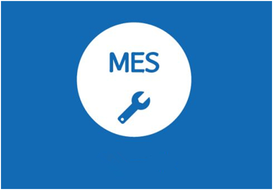

昆山企业如何利用MES抓住智能制造机遇？
近两年，政产学界将目光深度聚焦于智能制造，“智能制造”、“工业4.0”、“中国制造2025”这些热门词语在电视和网络上频繁出现。我国虽然已成为世界第二大经济体，但是我国的制造业与西方制造业强国相比，仍有30年左右的差距。要想成为制造强国，制造业就必须摆脱粗制滥造，就必须向“高、精、尖”迈进！
传统的制造型企业面临着排产报工难、工艺文件下发难浏览难、生产过程追溯难、产品质量管控难、管理者决策分析难等问题。昆山位于长三角工业聚集区，这里制造企业众多，也急需向智能化转变。但是智能化之路，并非一步登天，企业要想实现智能化，就必须开启数字化。昆山中之杰MES系统聚焦车间执行协同，专注提升企业车间管理水平和生产制造工艺，为企业深入定制车间管控最佳解决方案。
中之杰智能系统有限公司2007年成立，已经走过了10个年头。这10多年，中之杰帮助昆山、常州、无锡、南京、苏州等数千家江苏企业走上信息化建设道路，助力企业走上中国“智能制造2025”道路，智能化时代昆山的制造型企业可利用中之杰MES生产管理系统实现转型升级，实现高产出、高品质、低成本的生产方式。
中之杰MES系统能有效地协助计划人员安排作业、投产、备料，灵活应对多变的生产订单；在操作台旁设立电子看板，生产人员可通过电子看板浏览工艺文件。同时，中之杰MES系统可集中规范工艺流程，科学管理复杂的产品和工艺，并通过现场的数据收集，建立起物料、设备、人员、工具、半成品、成品之间的联系，提供完整准确的制造数据，既支持生产追溯，也为高层的决策提供数据支持。
同时，中之杰提供ERP+MES+PLM系统集成服务，是企业管理一体化解决方案提供商，帮助企业更好的将智能制造落地执行。
您可能还想了解下列文章：